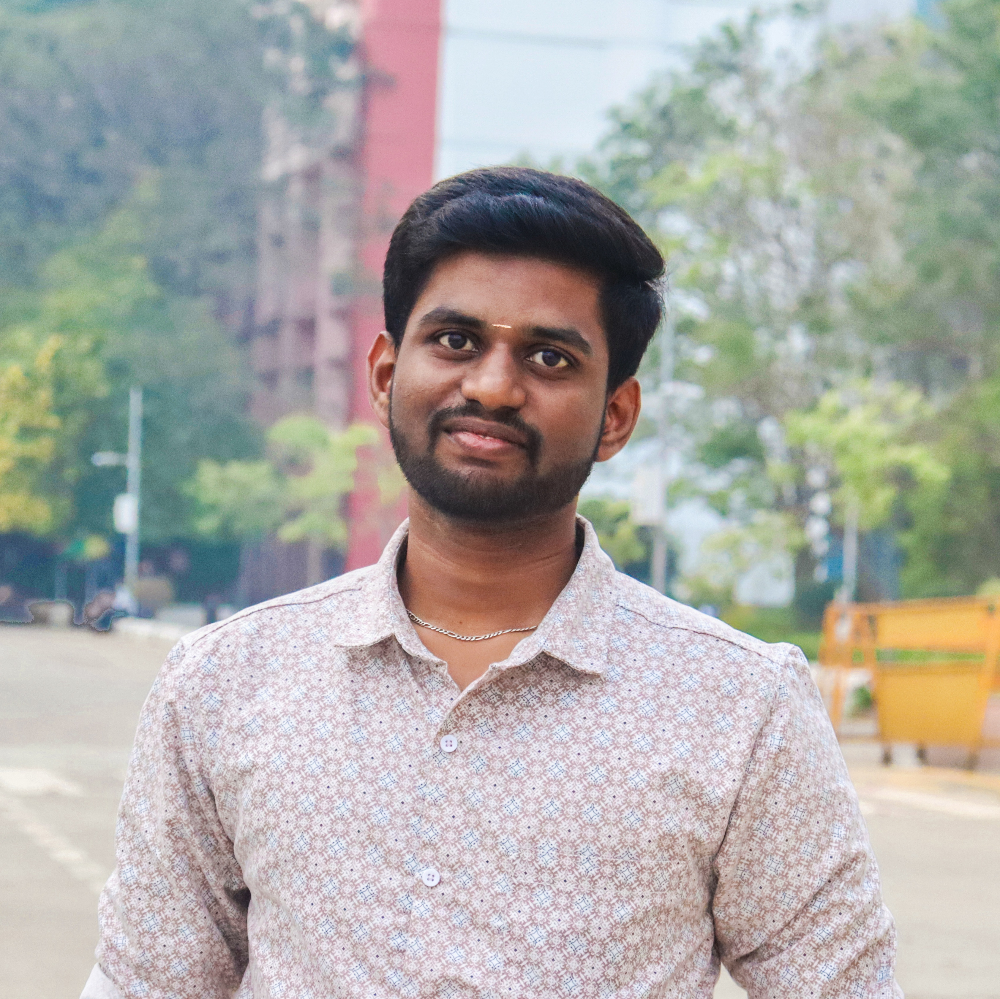

PhD Student
Sukesh Babu K
PhD Student, T&CMC Research Group
Research Topic: A Computational Investigation of Molecules to Materials of Photosensitizers for Photodynamic Therapy.
Sukesh Babu K's research focuses on computational chemistry, molecular modelling, molecular docking, drug discovery, drug formulation, and molecular dynamics.
His work involves metal-based ligand docking, protein residue analysis, and the use of advanced computational tools to study chemical interactions relevant to cancer drug discovery. His research reflects a strong interest in applying computational chemistry to address real-world challenges in medicinal and pharmaceutical sciences.